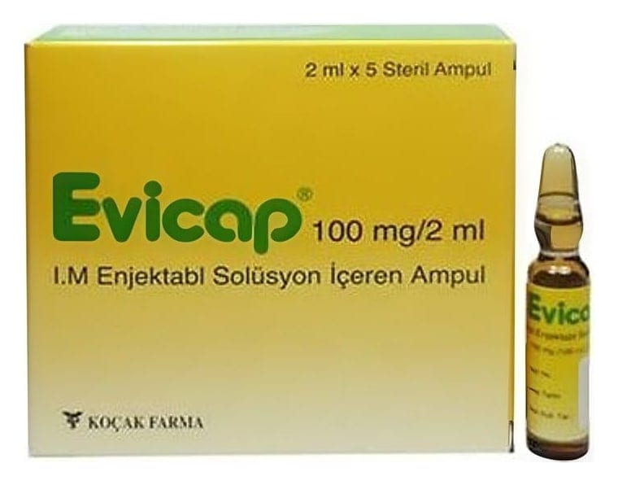

Evicap 100 mg/2 ml IM Enjeksiyonluk Çözelti İçeren Ampul, 5 Adet

Ne için kullanılır
KT · Bölüm 1EVİCAP, renksiz-hafif sarı renkli ve berrak çözelti şeklinde, a mpullerde sunulmaktadır.
EVİCAP, yağda çöz ünen bir vitamin olup, hücre bütünlüğünü korur ve güçlü bir antioksidan özelliğine sahiptir. 2 mL’lik 5 ampul iç eren karton kutu içinde ambalajlıdır.
EVİCAP, E vitamini eksikliği ve yetersi zliğine bağlı gelişen durumlarda kullanılır.